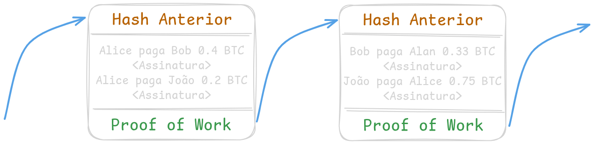

O Bitcoin é o protocolo de um sistema distribuído P2P (peer-to-peer) construído com base em décadas de pesquisa anteriores em criptografia e sistemas distríbuidos. Este protocolo veio ao mundo em 2008 por meio da publicação de um artigo intitulado "Bitcoin: A Peer-to-Peer Electronic Cash System" assinado pelo pseudônimo Satoshi Nakomoto. Nakamoto também publicou em um fórum online a primeira versão do software com a implementação do protocolo descrito no artigo.
É por meio da rede P2P que é possível transacionar bitcoins. Ao contrário das moedas tradicionais, o bitcoin é puramente digital. As moedas estão presentes apenas nas transações da rede. Toda transação tem uma quantidade de bitcoins associada e é protegida por uma chave, somente quem provar ser o seu detentor é que poderá criar uma transação válida na rede para gastar aqueles bitcoins. Isso é possível por meio de assinatura digital, cada chave possui duas partes relacionadas, uma pública (PK, Public Key) e outra privada (SK, Secret Key). Toda transação inclui a chave pública de quem está recebendo os bitcoins sendo transacionados, a única maneira de gastar os bitcoins contidos nesta transação é assinando-a digitalmente, algo que só pode ser feito tendo em posse a chave privada associada à chave pública presente na trasação. A assinatura é realizada a partir do conteúdo da mensagem e da chave privada, isso significa que não é possível copiar assinaturas para reutilizar em outras transações, já que qualquer mudança na transação irá gerar uma assinatura completamente diferente, mesmo utilizando a mesma chave privada, como pode ser visualizado na imagem a seguir:

Figura 1: Assinatura de transação
Este processo remove a necessidade de bancos como entidades de custódia no Bitcoin, todos os bitcoins são protegidos pela rede. Logo, por meio da auto-custódia de suas chaves você se transforma no seu próprio banco. Mas como nos ensinou Tio Ben - Com grandes poderes vêm grandes responsabilidades. As chaves podem ser armazenadas de inúmeras maneiras: na sua cabeça via memorização, em um pedaço de papel ou em uma placa metálica, ou em dispositivos projetados para esse fim conhecidos como Hard-Wallets. Dependendo do capital que planeja proteger, uma única chave pode ser arriscado, caso seja roubada, adeus para seus fundos. Para resolver este problema existe a possibilidade de criar suas transações com endereços multisig que requerem assinaturas de múltiplas chaves para destravar os bitcoins contidos nas transações.
Segurança da Rede
Mas você pode estar se perguntando, como é que a rede garante a segurança de todas as transações. Isso é trabalho de todos os nodos da rede. Cada nodo recebe todas as transações enviadas através da rede e verifica uma por uma. Esta verificação deve garantir que a assinatura realizada por quem transmitiu a transação para a rede é válida, ou seja, quem assinou a transação é o dono da chave privada relacionada com a chave pública presente na transação. Uma transação têm vários campos, mas para o entendimento do processo de verificação, basta considerarmos o seguinte:
data: Representa todos os dados presentes na transação;PK: Representa a chave pública da transação;Signature: Representa a assinatura da transação.
O processo de verificação é de fato muito simples, basta executar determinada função que verifica se a assinatura é válida para os dados da transação e para a chave pública, algo como Verify(data, Signature, PK). Caso a função retorne true (verdadeiro), a transação é validada e retransmitida para os outros nodos da rede, caso contrário á rejeitada.
Agora espero que tenho ficado claro o motivo pelo qual se diz que a natureza descentralizada do Bitcoin por meio da sua rede P2P resolve o problema do gasto duplo, removendo a necessidade de uma entidade centralizadora que seria suscetível a ataques, por exemplo, por parte dos governos. Toda nova transação é retransmitida e validada por todos os nodos da rede pelo processo acima detalhado, tornando impossível um ataque na prática, dada a quantidade de nodos rodando Bitcoin atualmente.
Consenso da Rede
Com transações sendo transmitidas de nodo para nodo sem qualquer ordem, como é que a rede chega a um consenso para que todos os nodos concordem com as mesmas transações válidas na mesma ordem? Este foi o maior problema que Satoshi Nakamoto resolveu, e o fez por meio do algoritmo de proof-of-work (prova de trabalho). Quando uma transação é transmitida para a rede, ela é validada, mas ainda não faz parte do livro-razão do Bitcoin, mais conhecido como blockchain - este nome se dá pois a estrutura de dados utilizada para armazenar as transações é uma lista encadeada de blocos. Para a inclusão de um novo bloco na blockchain é necessário uma prova de trabalho que confirme que recursos computacionais foram investidos para a validação de todas as transações presentes naquele bloco. O algoritmo proof-of-work consiste na descoberta de um número que aplicado à uma função de hash juntamente com os dados de todas as transações selecionadas para fazerem parte do bloco, gere como resultado uma saída que satisfaça a dificuldade da rede. Ao conseguir este número o bloco pode ser retransmitido para a rede, todos os nodos irão validar a prova de trabalho, e uma vez confirmada, irão incluir aquele bloco em suas blockchains, tornando assim possível o consenso entre todos os nodos da rede. A função hash aplicada não é qualquer função, é uma função de hash criptográfica, o SHA256, isso significa que não existe maneira de acelerar o processo de descoberta do valor sendo buscado, a única maneira é aplicar a função a todos os valores possíveis. A seguir está ilustrado um exemplo da descoberta do número para a validação de um bloco:
Figura 2: Proof-of-work
Satisfazer a dificuldade da rede significa que o retorno da função SHA256 deve iniciar com um determinado número de zeros, quanto maior a dificuldade da rede, maior o número de zeros, e menor a probabilidade de encontrar tal resultado.
Assim como transações são válidas apenas se contiverem assinaturas válidas, blocos são válidos apenas se contiverem provas de trabalho válidas. A blockchain é estruturada de tal forma que qualquer tentativa de corrupção dos seus dados invalida toda a cadeia, dessa maneira qualquer tentativa de fraude é logo identificada e rejeitada pela rede:

Figura 3: Blockchain
Qualquer alteração em uma única transação, por menor que seja, irá alterar o hash gerado para verificação da prova de trabalho, invalidando o bloco, assim como todos os blocos posteriores, uma vez que os blocos são conectados pelo hash da prova de trabalho. Ou seja, para fraudar uma transação incluída no último bloco da rede é necessário refazer todo o trabalho e transmitir o bloco para a rede, antes que um novo bloco seja minerado. Quanto mais blocos forem adicionados após o bloco contendo a transação que se deseja falsificar, são mais blocos para refazer a prova de trabalho. Na prática, para adulterar a blockchain é preciso controlar no mínimo 51% do poder computacional da rede.
Para recompensar o criador do bloco por todo o trabalho realizado, o protocolo permite a adição de uma transação enviando como pagamento para si próprio alguns bitcoins. É assim que novas unidades de bitcoin são criadas, e é por isso que esse processo é conhecido como mineração e os criadores de bloco como mineradores:

Figura 4: Mineração
A recompensa do minerador por cada bloco minerado é uma quantidade de bitcoins (que diminui pela metade periodicamente no evento conhecido como Halving), mais a soma de todas as taxas pagas pelos usuários que criaram as transações incluídas pelo minerador no bloco - por isso que taxas mais altas têm preferência na rede. A dificuldade é ajustada periodicamente pelo protocolo da rede, de forma a garantir que um novo bloco seja gerado a cada 10 minutos. Ou seja, quanto mais mineradores, maior será a dificuldade de mineração para garantir a política de geração de novos blocos a cada 10 minutos. Para garantir que apenas transações válidas sejam adicionadas nos blocos pelos mineradores, a recompensa só pode ser resgatada se todas as transações incluídas no bloco forem válidas.
Quando algum minerador resolve a prova de trabalho, ele retransmite o bloco para os demais nodos da rede. Conforme os demais mineradores recebem o novo bloco, eles param o processo de mineração do bloco atual, e recomeçam, gerando novos blocos candidatos com novas transações.
Participando da rede
O ponto mais importante é definir quem você quer ser na rede, alguém que delega a responsabilidade da custódia das suas chaves para outras entidades, alguém que delega a responsabilidade da validação das trasações para outros nodos, ou um verdadeiro soberano dos seus bitcoins. Estas três opções podem ser acessadas das seguintes maneiras:
- Via corretoras: neste cenário você não detém a posse das chaves, você cria uma conta na corretora, envia dinheiro fiat em troca da promessa da corretora de bitcoins. Como Andreas Antonopulous disse - Your keys, your coins. Not your keys, not your coins;
- Sendo cliente da rede: neste cenário, você detém a posse das chaves, mas delega a resposabildade da validação das transações para outros nodos da rede;
- Sendo um full node: neste cenário você torna-se verdadeiramente soberando em relação aos seus bitcoins, você detêm a posse das suas chaves e você valida todas as transações. Além de ser soberano, você aumenta a segurança da rede, sendo um nodo a mais que irá validar todas as transações transmitidas para a rede.
A maneira mais comum de se comunicar com a rede Bitcoin é por meio de wallets que implementam o protocolo, permitindo a criação de transações, bem como a geração de endereços para o recebimento de pagamentos. Existem variados tipos de wallets: desktop, mobile e web. Sendo um cliente, a sua wallet irá se comunicar com outros nodos da rede. No entando, se você roda o seu próprio nodo, você pode configurar a sua wallet para comunicar-se exclusivamente com o seu nodo.
Era isso para o primeiro artigo sobre Bitcoin, nos próximos irei aprofundar na parte técnica de tópicos como chaves, endereços e transações.
Referências
Antonopoulos, A., & Harding, D. (2023). Mastering Bitcoin: Programming the Open Blockchain.